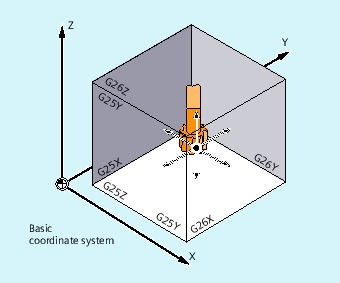

G25/G26 limits the working area (working field, working space) in which the tool can traverse. The areas outside the working area limitations defined with G25/G26 are inhibited for any tool motion.
The coordinates for the individual axes apply in the basic coordinate system:
The working area limitation for all validated axes must be programmed with the WALIMON command. The WALIMOF command deactivates the working area limitation. WALIMON is the default setting. Therefore, it only has to be programmed if the working area limitation has been disabled beforehand.
| G25 X…Y…Z… | |
| G26 X…Y…Z… | |
| WALIMON | |
| ... | |
| WALIMOF |
| Lower working area limitation Assignment of values in channel axes in the basic coordinate system |
| Upper working area limitation Assignment of values in channel axes in the basic coordinate system |
| Lower or upper working area limits for individual channel axes The limits specified refer to the basic coordinate system. |
| Switch working area limitation on for all axes |
| Switch working area limitation off for all axes |
In addition to programming values using G25/G26, values can also be entered using axis-specific setting data:
SD43420 $SA_WORKAREA_LIMIT_PLUS (Working area limitation plus)
SD43430 $SA_WORKAREA_LIMIT_MINUS (Working area limitation minus)
Activating and deactivating the working area limitation, parameterized using SD43420 and SD43430, are carried out for a specific direction using the axis-specific setting data that becomes immediately effective:
SD43400 $SA_WORKAREA_PLUS_ENABLE (Working area limitation active in the positive direction)
SD43410 $SA_WORKAREA_MINUS_ENABLE (Working area limitation active in the negative direction)
Using the direction-specific activation/deactivation, it is possible to limit the working range for an axis in just one direction.
| Note |
The programmed working area limitation, programmed with |
| Note |
|
| Program code | Comment |
|---|---|
| N10 G0 G90 F0.5 T1 | |
| N20 G25 X-80 Z30 | ; Define the lower limit for the individual coordinate axes |
| N30 G26 X80 Z330 | ;Define the upper limit |
| N40 L22 | ;Cutting program |
| N50 G0 G90 Z102 T2 | ;To tool change location |
| N60 X0 | |
| N70 WALIMOF | ;Deactivate working area limitation |
| N80 G1 Z-2 F0.5 | ;Drill |
| N90 G0 Z200 | ;Back |
| N100 WALIMON | ; Switch on working area limitation |
| N110 X70 M30 | ; End of program |
See also:
Working area limitation in BCS (G25/G26, WALIMON, WALIMOF): Further information
Working area limitation in WCS/SZS (WALCS0 ... WALCS10)